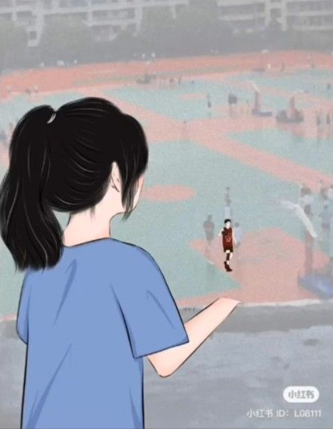
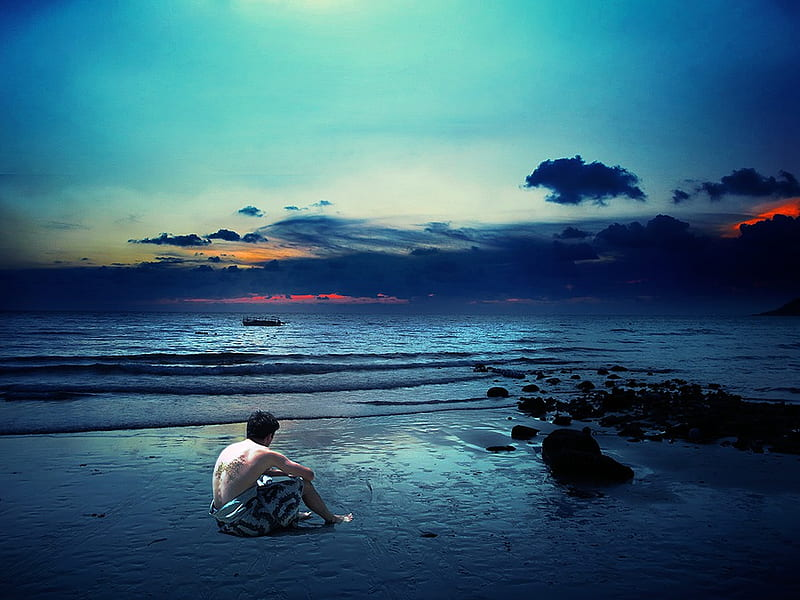

Ariane's Poems
Buntod Reef: The Place You'll Love To Be

Admiring From A Far: Liking You Was the Best Choice
Loving you: worth the risk

A Piece Of Me That Still Waits For You
Ariane's Homereading Reports
Homereading Report 1
Homereading Report 2
Homereading Report 3
Homereading Report 4
Homereading Report 5
Homereading Report 6
Homereading Report 7
Julianna's Other Works
Speech
Article